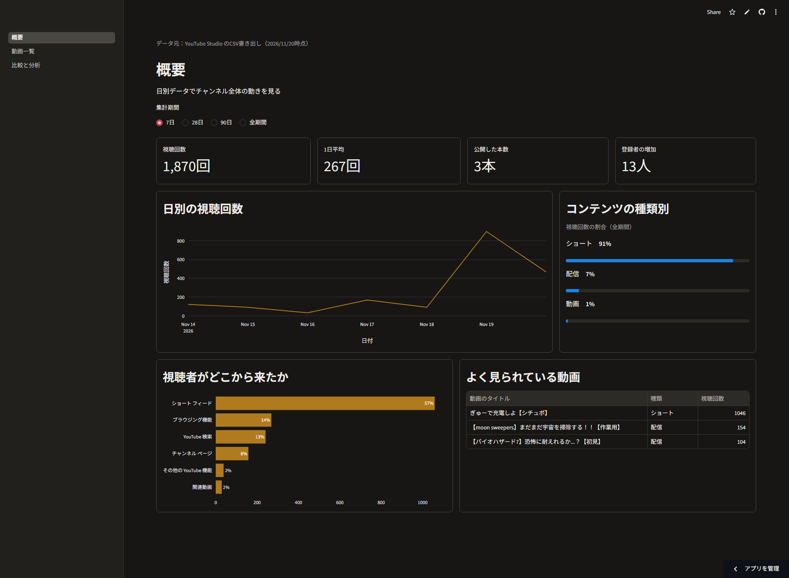

DATA 03
YouTubeの分析アプリを作る
YouTube Studio から書き出した CSV を読み込み、視聴回数や登録者の増減を見られるアプリを作りました。
全体の流れ
データがどこから来て、どこに保存され、どう見られるか。
STEP 1
取得
YouTube Studio から、CSV を書き出す
STEP 2
読み込み・集計
Python で CSV を読み込み、期間ごとに集計する
STEP 3
表示
Streamlit で、グラフと表を画面に出す
STEP 4
公開
Streamlit Community Cloudに公開
背景と目的
自分の YouTube チャンネルの動きを、数字だけでなく、画面で見て確かめたいと思い、作りました。
設計のポイント
-
データの取り方
YouTube Studio から、CSV を書き出して使いました（2026/11/21 時点のデータ）。API ではなく、CSV を使ったので、データは自動では更新されません。
-
データを読み込む部分と、表示する部分を分ける
CSV を読み込んで整える部分と、画面に出す部分を、分けて書いています。見せ方を変えても、データの処理に影響しないようにするためです。
-
AI との分担
コードの大半は、AI に書いてもらいました。自分は、どんなアプリにしたいかを決めることと、うまく動かない所を見つけて伝えることを担当しました。
できあがったもの

期間（7日・28日・90日・全期間）を切り替えて、視聴回数、1日平均、公開した本数、登録者の増加を見られます。
苦労したことと工夫
ソースコードや、回帰の理解が、大変でした。Python の基本は分かり、書いてあることは何となく理解できますが、0 から自分で書くことは、まだできませんでした。まだまだ勉強不足だと感じています。
学んだことと、次にやりたいこと
データを読み込む部分と、表示する部分を分けたほうがよいことを学びました。次は、小さな機能を、AI に頼らず自分で 0 から書いて追加してみたいです。